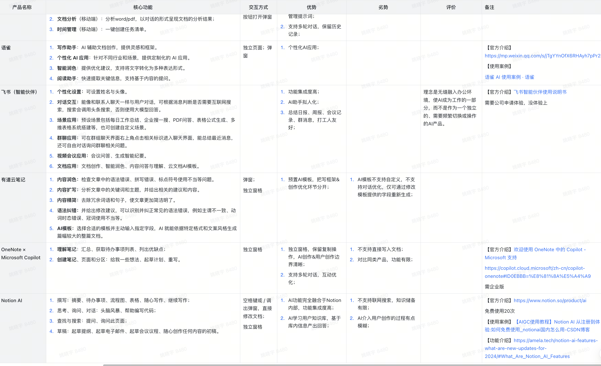

AI 知识管理场景探索及 Agent 方案设计
从“替人创作”走向“助人理解”。深度调研 Office、Notion 与 NotebookLM 等竞品，挖掘知识内化场景痛点，提出“嵌入式协同” Agent 方案，重塑人机知识交互。
项目背景：寻找 AI 落地的“杀手级”场景
当时我们正处于大模型平台的场景探索阶段。为了寻找 AI 落地的“杀手级”场景，我主导了 AI + 知识管理 (KM) 方向的专项调研。调研分为“竞品横向拆解”与“用户纵向全链路分析”两个维度。
竞品调研：发现两大交互瓶颈
通过对传统工具（Office, Notion, 印象笔记）与新形态产品（NotebookLM, Flowith, Spark）的对比，我发现了目前 AI 化过程中的两个核心痛点：
交互割裂 (Add-on vs Native)
传统产品多采用侧边栏 (Copilot) 模式，AI 与创作区分离，用户需要频繁在‘思考’与‘指令’间切换，并未真正实现 AI 原生化。
心流中断 (Flow Interruption)
部分新产品虽有交互创新（如反斜杠触发、小卡片），但‘提示词工程’与‘人工核验’过程复杂，打断了用户的创作心流 (Flow)，导致人机协同的效率并不高。
传统知识笔记类产品调研表

用户调研：识破“前重后轻”的现状
我将知识管理的生命周期拆解为四个阶段：收集 → 分类 → 精读/加工 → 引用/再创作。
现状：重收集与分类
市面多数产品已在“前两步”做得很重，通过 AI 摘要、自动标签实现了减负。
机会：精读加工与内化输出
真正的断层发生在 “精读加工”到“内化输出”（后两步）。目前 AI 多流于“替人创作”（纯生成），而非“助人理解”。如何通过卡片化交互将碎片知识转化为“随时可调用的神经元”，是目前市场的空白点。
知识管理全链路分析图

调研结论与行动
弱化“对话式 AI”，强化“嵌入式协同”
基于此，我提出的产品建议是：弱化‘对话式AI’，强化‘嵌入式协同’。重点解决知识在精读阶段的卡片化重组，让AI通过主动关联和启发式提问，帮助用户完成知识内化，而非简单的内容堆砌。
关键信息
- 竞品横向拆解
- 全链路用户旅程分析
- 卡片化交互设计
亮点展示